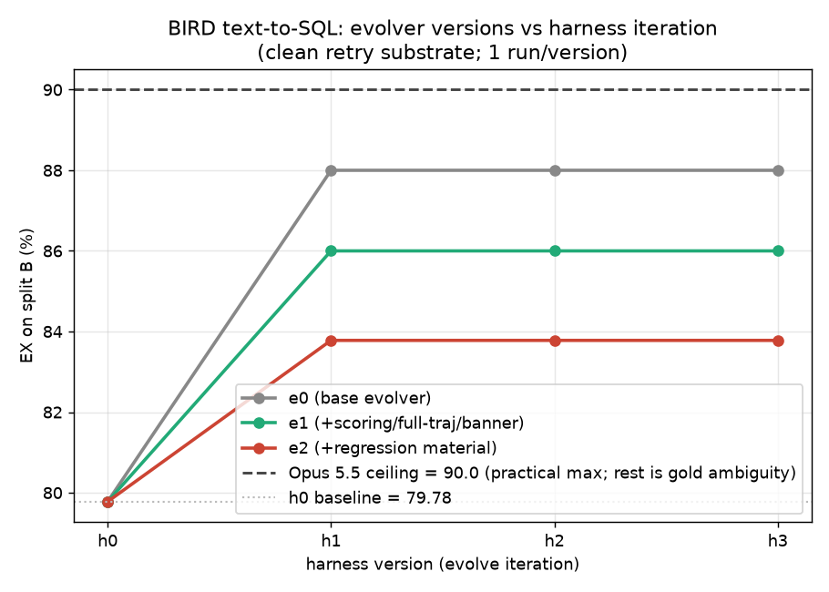

1基础架构
两个角色，一条不可逾越的链路：
human ──► evolver ──► executor
(改方法) (GLM,改harness) (qwen,干活)| 角色 | 是什么 | 谁能动它 |
|---|---|---|
| executor | 小模型 qwen 的 harness：prompt、工具、循环、上下文管理、提交逻辑 —— 真正去解题的那套代码 | 只有 evolver 能改 |
| evolver | 强模型 GLM：读 executor 的失败轨迹,诊断,改写 harness | 人只能改 evolver（给它什么材料、什么工具、什么方法论） |
固定底座（不可进化,保证可比 & 安全）:模型 id、每题预算上限（call 数 / wall time）、沙箱。RSI 循环: measure → 给 evolver 材料 → GLM session 改 harness → 验证 → 再 measure → accept / reject。
2定义进化器 → e0
起点按 PDF:GLM 包进一个现成的开源 agent harness（mini-swe-agent）当改进器;qwen 的 harness 从 0 写,human baseline = 纯 shell。
调研 → 拿到的 idea
| 来源 | 拿到什么 |
|---|---|
| False Frontiers:Diagnosing Co-Cheating in Self-Evolving Search Agents（CrossFit,arXiv 2609.39102） | 揭示自进化里 proposer ↔ solver 会互相强化错误(co-cheating / 对彼此过拟合);CrossFit 用交叉验证式 held-out 解决 → 我们据此做 A/B/C split:A 学习、B held-out 选择、C 最终 untouched,让进化器看不见用来评判它的数据 |
| GEPA（reflective prompt evolution） | 用"反思 + 诊断-再改",不盲改 |
| Harness² / Meta-Harness / Better-Harness 类 | executor 要有版本控制;历史改动当材料喂给进化器 |
| 开源小模型前沿分析 | 小模型吃机制不吃劝导 → 把知识变成工具/检查,而不是长 prompt |
e0 = 给 harness "能跑东西"的工具
最基础的进化器:给 executor shell + 一个 run_candidate 自测工具,让 harness 在接受一个答案之前能自己跑一下验证,而不是瞎提交。这是 e0。
3数据问题（BIRD）
做之前先踩了个大坑:BIRD 原版 gold 有约 70 处标注错误。几个 aspect + 例子:
| 类型 | 例子 |
|---|---|
| gold SQL 本身错 | q1500 对一个不存在的时间段查询,gold 却返回 976 行数据 |
| 四舍五入 / 精度 | q416 gold 算出 12.98%,正确应是 47.96%（算子顺序、printf vs ROUND） |
| 歧义 / 多解 | 行数近似（q17: 56 vs 58）、同一计数不同集合 |
我们改用 Arcwise-Plat 的 corrected gold（498 题修正版）。
4e0:h0 → h1 做了什么
进化器的诊断:qwen 最大的、可定位的失败簇是输出 shape 问题 —— 该返回原值却包了 ROUND()、用 printf() 返成 TEXT、用 || 拼"全名"、把值映射成 Yes/No。
h1 加进去的机制:
- 提交前执行检查（submission gate） —— 提交答案前先跑一遍、看结果形状对不对;
- 可执行 fallback;
- "返回原始值"的明确契约。
5看 e0 的 trace → e1
读 e0 的进化轨迹,发现进化器"手里的信息太薄":它只看得到模型输出 + shell 结果,看不到 harness 自己的干预(gate 到底拦了没有);没有统一的打分口径;预算也不透明。
e1 = 三个改动(都在"给进化器更好的材料"这一层):
| 改动 | 为什么 |
|---|---|
| 预算 banner + 更多时间 | 让进化器知道"还剩多少步",在截断前主动收尾 |
| 把全部 A 轨迹喂进去 | 进化器用自己的 shell 去读每道 A 题的完整轨迹(通过/失败都给),自己挖规律 |
| scoring 契约 | 统一打分口径,别让它凭感觉 |
6看 e1 的 trace → e2（做错题的问题）
再读 e1 的轨迹,发现一个更隐蔽的问题:h0→h1 涨了分,但同时把一些本来做对的题改坏了 —— gate 的"一刀切"检查在过度纠正(假阳性)。净涨分掩盖了这些回归。
e2 = 回归集材料:把"上一次被接受的改动改坏的那些题"(问题 + 父版本的正确 SQL + 现在错的 SQL)作为一等材料喂给进化器,再加一条 playbook 原则:只在确诊的问题上干预,别过度纠正本来对的。
7"啊哈…没用!" — headroom
三个版本各跑一轮进化,都是同一个形状:h0 → h1 一次性涨分,然后 plateau(h2/h3 被 gate 拒)。为什么继续改收益很小?因为 headroom 本身就小。

| 参照 | split B EX（corrected gold） |
|---|---|
| qwen baseline h0 | 79.78 |
| GLM 当 executor + 裸 h0 | ~77.3 (≈ qwen → harness 才是杠杆,不是模型) |
| evolver 的 h1（e0 / e1 / e2） | 88.0 ± 1.2 / 86.0 ± 3.5 / 83.8 ± 1.0 |
| Opus 5.5 golden 上界 | 90.0 |
Opus 漏的那 15 题,大多是 gold 歧义/选择,不是真错 → ~90 就是 corrected mini-dev 的实际天花板,别指望 100。所以 qwen 从 80 起步、进化到 84–88,剩下到 90 的空间小、且上半截不可约。
8Discussion
Leaking —— 怎么让 B 能被"用"但不被"看见"
进化器很聪明,一旦看到 held-out 的题就会对它过拟合。所以:
| 机制 | 效果 |
|---|---|
| 只把 A 的轨迹拷进进化器的沙箱 | B / C 从不拷贝 → 进化器看不到 B/C 的 item 级细节 |
run_candidate 只对 split A 放行 | 进化器永远跑不了 B/C → B 只作为"该不该接受这个候选"的选择信号,题目本身它看不到 |
| gold SQL 给、gold 轨迹不给 | 答案可以给(本来就是标准答案),但"怎么一步步做出来"不给,避免抄解题过程 |
结果:B 是一个被使用、但对进化器不可见的选择集;C 连选择都不参与,只在最后冻结后测一次。(实测 C 上 e0h1/e1h1 ≈ 87.7 / 88.9,和 B 接近 → 没过拟合。)
进化器要不要联网
我们做了个 ablation:给进化器开联网权限让它重跑一遍。结果:它在 79 条命令里一次都没联网(0 curl / urllib)—— 网对它零收益。而联网会带来 prompt injection / 数据外泄 / 不可复现的问题,guardrail 很难做。
附:进化器产出的通用机制
值得单独一提的是进化器自己发明的东西 —— 它们都不针对 SQL:提交前验证闸、自纠错、以及很犀利的元反思("gate 的上限是修复可靠性,不是检测质量"、"净回归就该一票否决")。在 SWE-efficiency(改真实代码提速)上,同一个进化器独立地又发明了验证闸并诊断出小模型的"分析瘫痪"(只 profiling 不改代码)—— 同一套通用 agent-harness 原理在两个完全不同的 benchmark 上重现,这是"进化器通用"最直接的证据。